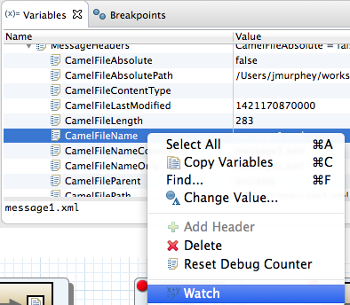
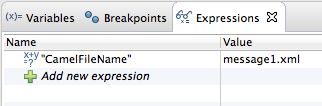

By adding them to the watch list, you can easily zero in on particular variables to see whether their values change as expected over the course of the routing context.
To add a variable to the watch list:
If necessary, start up the debugger. See Running the Camel Debugger.
In Variables view, right-click a variable you want to track to open the context menu.
Select Watch.
A new tab, Expressions, opens next to the Breakpoints tab, displaying the name of the added variable and its current value, for example:
Repeat Step 2 and Step 3 to add additional variables to the Watch list.
![[Note]](imagesdb/note.png)
Note The variables you add will remain in the watch list until you remove them. To do so, right-click a variable in the list to open the context menu, and then click .
With Expressions view open, step through the routing context to track how the value of each variable in the Watch list changes at each step in the routing context.